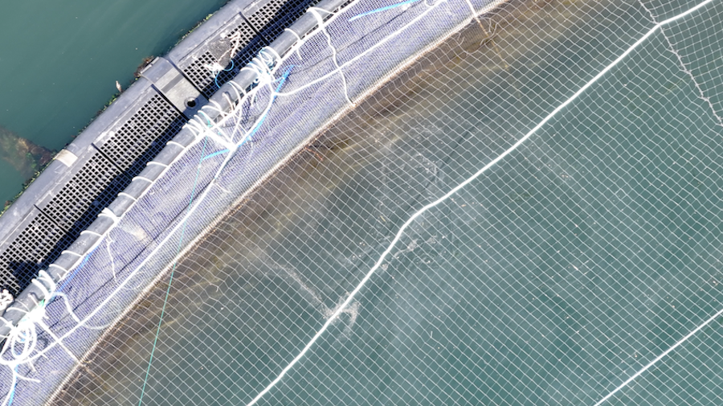

Toxic waters
Waste from salmon farms seeps into surrounding waters, carrying uneaten feed, faeces, and chemicals that alter nutrient levels and harm marine life. These pollutants accumulate over time, turning once-healthy ecosystems into nutrient-rich, oxygen-poor zones.

Water quality inside sea pens is often poor

Excess feed and fish faeces pollute the water